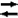

Network Component > Preferences > Network-World Interaction
The world component of Simbrain illustrates how neural nets can model the interaction of living organisms with their environment in the real world. The sensory inputs produced by the world component are received by the network component via input nodes; the network component in turn can produce outputs at its output nodes which are received by the world component and which affect how the creature moves.
There are two aspects to controlling the interaction between the neural network and the world. First, one turns information flow between the two components on or off, using the network-world interaction button. Second, one associates each input neuron with one component of an n-tuple of stimulus values produced by the world , and each output neuron with a motion that the creature will perform in the world (see input and output neurons).
Network-World Interaction Button
The network-world interaction button on the toolbar acts like a two-way valve, which turns the flow of information to and from the world on or off. Each time this button is pressed, it goes to the next mode in a cycle of four modes:
| World to Network. The world is sending information to the network. You "push" the creature around to see what affect this has on the network | |
| Network to world . The network is sending information to the world. The network controls the creature. Play with the network to see how the creature behaves. | |
|  | Both ways . The world and net are both talking to each other. Note that you can still intervene and modify network or world on the fly. |
Neither way. Network and world are disconnected. Good for testing the network independently of the world. |